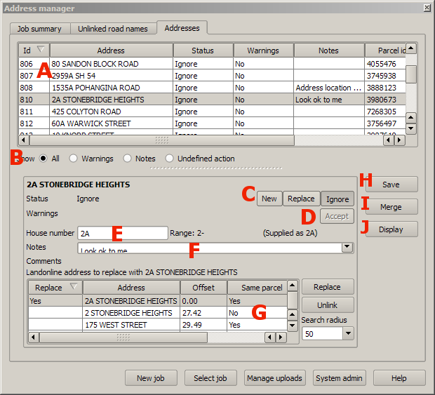

Address linking screen
See the overview for a high level description of address uploads

The address linking screen is where most of the work in setting up an address upload is done.
This comprises selecting a status that will define how the address is used,
optionally selecting a landonline address that it will replace, and
possibly editing the house number and adding notes for future reference.
Additionally there is an option for merging groups of addresses into a single address (for example groups of flats).
The main components of this screen are:
- A the address list at the top of the screen. This is used to select which address to work on. The columns shown include a "cluster", which identifies groups of addresses supplied at the same location.
- B the selector radio buttons for choosing which addresses are displayed. This can be all addresses, just those with warnings, just those with user notes, or just those for which a status has not yet been defined.
- C the status selector buttons.
These are used to choose what to do with the address. The
options that are available depend on attributes of the address.
In particular, the replace button is only available if the mark is linked to an address (see below)
- D the accept warnings button. This clears the warnings associated with the address.
- E the house number edit box - use this to change the supplied number (for example if it is in a non-standard format). Beside the house number is the number range that will be entered into Landonline (or invalid if the number format is not valid), and the supplied address.
- F the notes edit box - used to add and edit notes associated with the address. The notes can be any arbitrary text that you need to record decisions or required actions for example). Beneath this may be comments read from the supplied data set.
- G the address point linking list. This offers a list of nearby address points that are candidates for replacing. Select the address to replace and click "Replace", or click "Unlink" to unlink the currently selected address point. The search radius defines how far away candidate replacements can be.
- H the save button saves the changes to the current address (if any) and moves on to the next address in the list
- I the merge button is used to merge a group of addresses into a single address. Select one of the addresses in the list and click this button to open the merge address dialog. Note that addresses can only be merged if they lie on the same parcel and are connected to the same landonline road. This button can also be used to unmerge addresses that have already been merged.
- J the display button locates the address in the QGIS map window